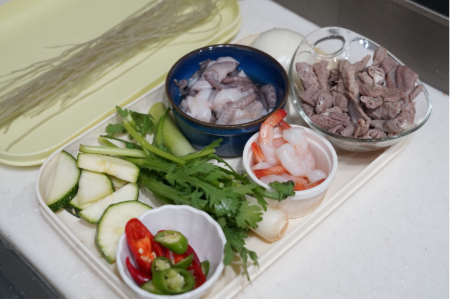
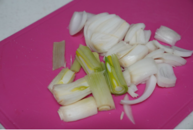

Korea Food
재료 리스트
낙지 1마리 | 곱창 200g | 칵테일새우 8마리 | 양파 1개 |배추 2장 | 대파 1대 | 청양고추 1개 | 홍고추 1개 | 호박 1/5개 | 당면 한줌 | 물 또는 다시마 육수 1컵반 |미나리 약간
레시피
1. 낙지 손질
소금과 밀가루를 넣어서 분순물을 제거 해주세요. 그 뒤 세척 후 먹기 좋은 크기로 잘라 소분해 놓고 곱창도 마찬가지로 밀가루로 이물질을 제거해주세요.

2. 채소 손질
양파와 배추는 적당하게 썰어 주시고 청양고추와 홍고추, 대파는 쏭쏭 썰어주세요. 대파는 길게 썰어도 되고 호박은 반달모양으로 1/4로 썰어주세요.
3. 조리
당면은 불리는 동안 낙곱새양념장을 만들어 놓았다가 육수에 넣어주세요.
전골냄비에 다시마육수에 만든 양념장을 섞어 붓고 곱창,낙지,새우, 불린 당면을 넣어주세요.
그 다음 4~5분 정도 센불에서 끓여주신 뒤 끓기 시작하면 배추와 호박, 대파, 양파를 넣고 중불에서 더 끓여주세요.
양념장을 미리 육수에 넣어놓으면 더 깊은 맛을 낼 수 있습니다. 다 익었다 싶으면 청양고추, 홍고추를 넣고 맨마지막으로 미나리를 올려주세요.

낙곱새 완성!!